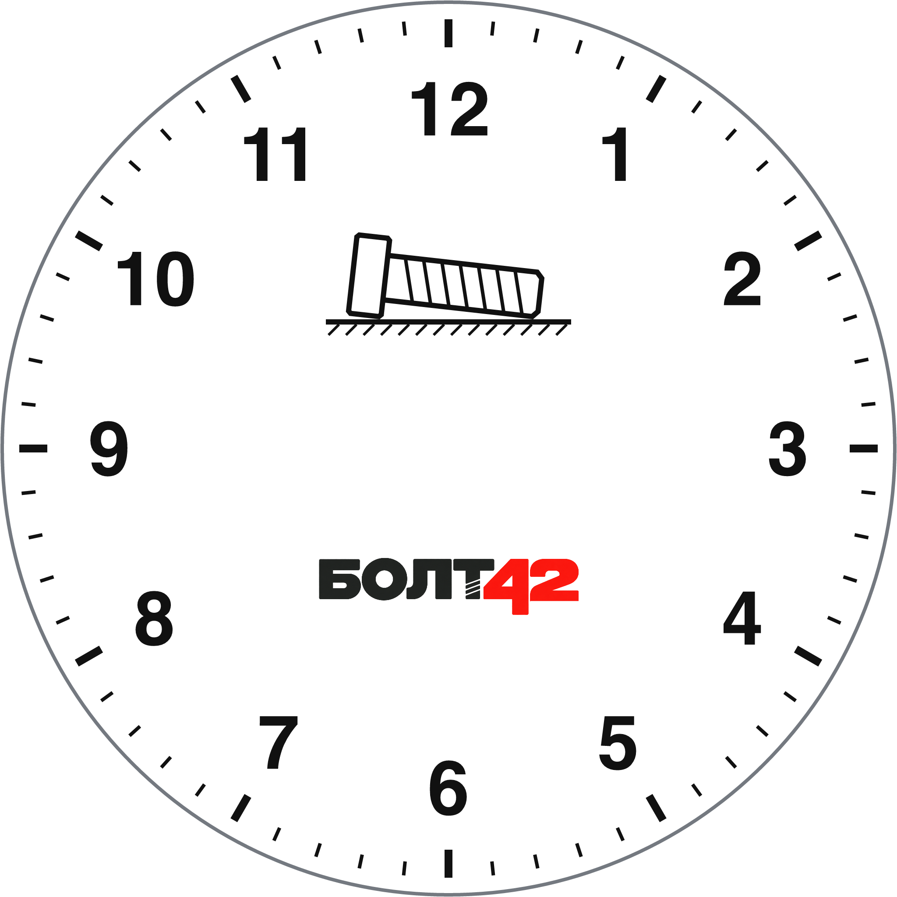

ВРЕМЯ · РАСТР 2048 × 2048
Время Минимализм
Белый 12-часовой циферблат с прямыми стрелками.

Положение стрелок как на фото
ВРЕМЯ · РАСТР 2048 × 2048
Белый 12-часовой циферблат с прямыми стрелками.

Положение стрелок как на фото